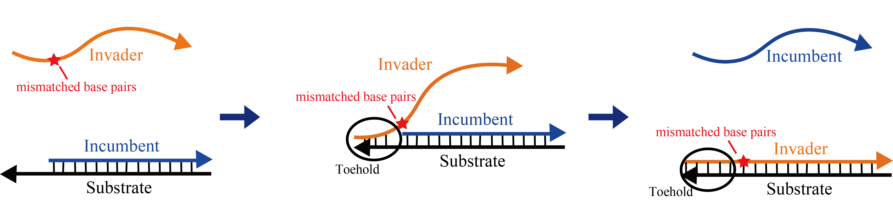

A mismatched base pair occurs when a sequence is paired with a sequence that is partially complementary for binding to desired chains, but not unintended chains. When chains are joined into two strands, there are many combinations that complement each of the chains; accordingly, they are linked, and the combination is intentionally reduced to prevent combining. For example, strands 1 and 2, which are unwanted bonds, replacement with base sequences that are partially noncomplementary results in a decrease in complementary portions, thereby reducing binding[1].

Mismatched base pairs are effective not only to not take undesired reactions but also to control reaction rate. Consider the strand displacement reaction as shown in Figure 2. Adding a mismatched base pair to Invader reduces the reaction rate of the strand displacement reaction. The reaction rate varies depending on where in the Invader's branch migration region mismatch base pairs are added[2].
{kind=link}
Adding a mismatched base pair near the toehold region greatly reduces the reaction rate. In the literature, when a mismatch base pair is added to the first base next to toehold, the reaction rate is reduced to 1/200, the second base is 1/60, the third base is 1/20, and the fourth base is about 1/7 It is reported that it will become.